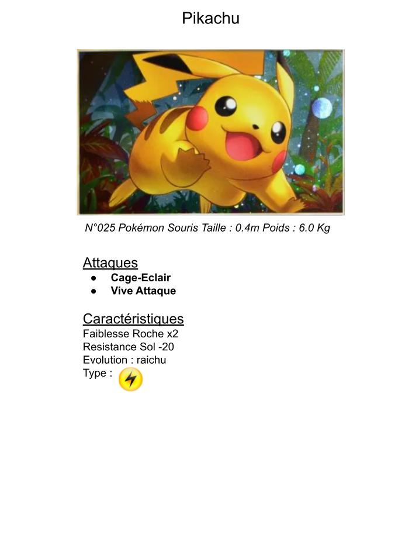
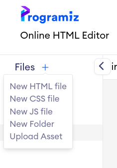

Pikachu le premier Pokémon
Objectif
Le but est de créer notre toute première carte pokemon : Pikachu.L'objectif est de faire la carte Pokemon ( rappel ici des balises)
Consignes :
- Ecrire "Pikachu" en titre principal centré
- Ecrire en italique centré"N°25 Pokémon Souris Taille : 0.4m Poids : 6.0 Kg"
- Ajouter l'image de Pikachu (image libre)
- Ecrire "Attaques" comme un titre secondaire souligné
- Ecrire "Caractéristiques" comme un titre secondaire souligné
- Ajouter les Caractéristiques
- Ajouter deux attaques sous forme de listes
Exemple
Nouveau Fichier
On va pour cela créer un nouveau fichier : New HTML File
Nommer le fichier pikachu